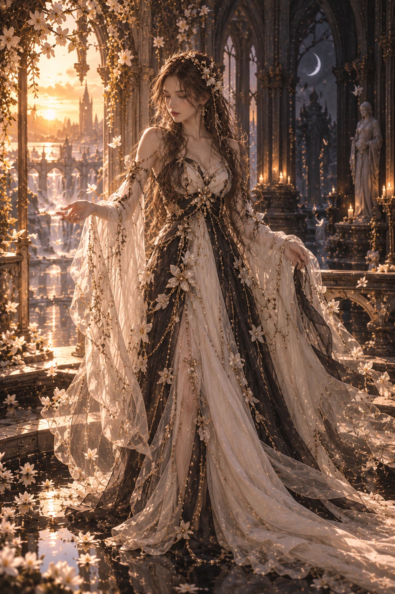
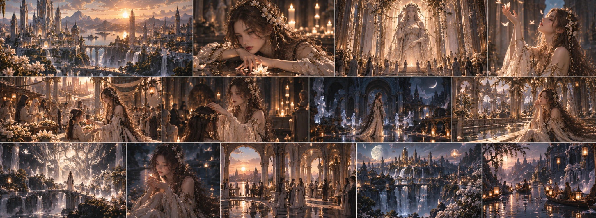

PLACES OF PASSAGE
Sacred regions where the boundary between life and death is believed to be at its thinnest. People come here not to summon the dead, but to say farewell to them.

Goddess of Balance
Balance · Life and Death · Souls and Shadows · Passage · Compassion · Responsibility
Yuna’s power exists at the boundary between life and death. To her, these two concepts are not opposites; they are two complementary parts of the same cycle. Where one eliminates the other, order breaks down.
Explore her teaching ↓Balance · Life and Death · Souls and Shadows · Passage · Compassion · Responsibility
Yuna’s power exists at the boundary between life and death. To her, these two concepts are not opposites; they are two complementary parts of the same cycle. Where one eliminates the other, order breaks down.
She can sense souls departing from the world, perceive the boundary between the living and a world that no longer belongs to them, and restore balance where that boundary is disturbed. Yet Yuna’s task is not to prevent death. Keeping alive what must die, or ending the life of someone who should continue living, both contradict the balance she represents.
For this reason, Yuna’s power comes not from unlimited dominion over life or death, but from the responsibility of preserving the order between them. “Protecting life does not mean rejecting death.”
Yuna is the second-born of the seven sisters.
Although Nora is the eldest sister, Yuna has become one of those who naturally take on responsibility among her sisters. Yet her leadership does not come from a desire to rule. For Yuna, leadership is not a privilege, but a responsibility to bear.
She sees her sisters not as people to be governed, but as parts of a whole that must be protected.
For this reason, mediation is one of Yuna’s most distinctive qualities. In a disagreement, the first thing she seeks is not the winning side, but where the balance has been disturbed. Loving one of her sisters does not mean she considers everything that sister does justified; opposing someone does not mean she sees them as an enemy.
Yuna’s compassion is not unconditional forgiveness, either. She can understand a soul’s pain, but does not consider that pain a justification for harming others. She can understand why a person did wrong, but does not erase its consequences. For this reason, old accounts describe Yuna as capable of being as unsettlingly impartial as she is reassuring. Because balance does not always feel fair.
And Yuna knows this better than anyone.
At the heart of Yuna’s teaching lies a simple but difficult thought: Every beginning makes room for an ending, and every ending for another beginning.
For Yuna, death is not failure. Nor is grief a weakness to be eliminated. She sees people’s suffering after losing someone as a natural consequence of life.
Yet she believes that love for the past must not be allowed to consume the living. For this reason, Yuna’s teaching does not tell people to “forget.” It teaches them to carry on.
Leaving something behind does not mean it is worthless. A person’s death does not erase the meaning of their life. The end of an era does not mean that what happened during it never existed.
This is exactly where Yuna’s balance begins: Remembering, but not clinging. Loving, but not possessing. Grieving, but not giving up on life.
Equira is not merely a kingdom ruled by Yuna.
In the kingdom’s culture, life and death are not seen as two separate realities hidden from each other. The spaces where people live and those set aside for souls, memories, and the past are parts of the same city.
For this reason, death is not pushed outside life in Equira. People remember those they have lost and keep their memories alive; yet trying to hold souls in the world is seen as an act against the order Yuna represents.
Yuna’s sacred places are not merely temples people visit to make wishes, either. Some are places of passage: places where people grieve, say farewell, face the past, and spend time in silence before beginning new stages of their lives.
For this reason, Equira’s relationship with Yuna is built more on acceptance than fear.
The people of Equira do not remember Yuna only at the moment of death.
When a new child is born, someone enters adulthood, a family is formed, a journey begins, an era ends, or a person dies, the same concept appears again:
Passage. This is why Yuna is remembered especially at life’s irreversible thresholds. What people ask of her is often not a miracle. Rather than asking her to reverse a death, they turn to her to find the strength to let go of someone they have lost. Sometimes, the person prayed for is not the one who died, but the one left behind. And this is often where Yuna’s compassion is truly directed.
Yuna can hear souls. But this does not mean the dead are constantly wandering around her.
When a soul cannot leave the world when it should, the natural boundary between life and death begins to break down. Yuna’s task is not to forcibly destroy the soul, but to understand what holds it.
Sometimes it is fear. Sometimes an unfinished promise. Sometimes love. Sometimes anger. And sometimes it is the living refusing to let go of the dead. For this reason, Yuna concerns herself not only with the dead, but also with the living who cannot leave them behind. Shadows are not always signs of evil, either. In Yuna’s teaching, shadow is not the enemy of light, but a consequence of its existence.
Where there is light, there is shadow. Trying to destroy one also disturbs the meaning of the other.
Yuna’s position among the seven sisters has been shaped more by her ability to establish balance than by her power. Although being the second-born after Nora gives her a natural weight, Yuna never sees this as superiority. She knows how different her sisters are from one another.
She sees that some want to protect the world, some to change it, some to understand it, some to heal it, and some to tear it down and rebuild it.
Yuna’s aim is not to make them identical. Quite the opposite: Balance is not the disappearance of differences; it is different powers being able to exist without destroying one another. This thought is both one of Yuna’s greatest virtues and one of her heaviest burdens. Because a day will inevitably come when some things cannot be balanced.
Yuna appears calm from the outside.
She rarely raises her voice and does not need to do so to establish authority where she is. She does not rush when listening to people; before deciding, she pays attention as much to what the other person does not say as to what they do.
But her calm is not indecision. Once she has made a decision, it is difficult for her to step back. Yuna’s most distinctive contradiction emerges here: despite her profound empathy, she can be extremely firm when necessary. Because she knows that understanding everyone does not mean agreeing with everyone. This is why reading her only as a “good” or “compassionate” goddess would be incomplete.
Even Yuna’s compassion has a boundary. And that boundary: is balance itself.
“Every beginning has an ending, and every ending has a continuation.”
Yuna

Sacred regions where the boundary between life and death is believed to be at its thinnest. People come here not to summon the dead, but to say farewell to them.
Here the people of Equira pray not for life to be prolonged, but to be able to accept what cannot be changed.
Quiet gardens where the memory of those lost is preserved. Rather than trying to keep a soul in the world, the life it left behind is remembered here.
In most depictions, Yuna is shown not winning a victory, but standing between two sides. For Equira, her strength comes not from ruling, but from preserving the boundary.
Accepting the existence of death does not make Equira a dark kingdom. On the contrary, its people believe that life’s transience makes it more valuable.
Not every soul is believed to need to remain in the world. According to Yuna’s teaching, one of the hardest forms of love is allowing what must go to go.